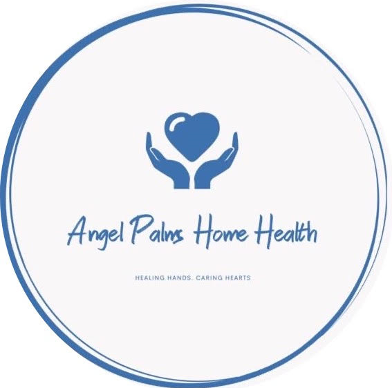

ANGEL-PALMS Home Health Care is passionate about in-home care services in Orlando, Oviedo, Ormond Beach, Seminole County and surrounding areas. Our Major objective is to Engance your quality of life through attentive home care services.
We adhere to Patient Safety and Quality in Home Health Care. To Find out more about, see: Patient Safety and Quality in Home Health Care
We provide skilled home health services include:
- Wound care for pressure sores or a surgical wound
- Patient and caregiver education
- Intravenous or nutrition therapy
- Injections
- Monitoring serious illness and unstable health status
